library(tidyverse)
library(FactoMineR)
library(factoextra)
library(corrplot)
library(ggdendro)
library(dbscan)Aprendizaje no supervisado: Clusters
Librerías
Aprendizaje NO supervisado
Busca aprender la distribución del set de datos:
- Conocer o extraer la información contenida en la distribución del set de datos.
Busca representar de forma simplificada un set de datos:
- Conservando la mayor cantidad de información.
La maldición de la dimensionalidad
No es un problema único para Machine Learning.
El problema se resume en que a mayor cantidad de dimensiones tengan los datos a analizar, más complejo se hace el análisis y el uso de los recursos aumenta.
Incrementar las dimensiones o tomar en cuenta más dimensiones del set de datos en cuestión, va a aportar un mejor desempeño del algoritmo, pero tienen un límite, a partir del cual este desempeño empieza a decrecer conforme se agregan dimensiones.
Veamos un ejemplo sencillo de estadísticas de arrestos para USA en 1973:
- Murder: arrestos por asesinatos por cada 100.000 habitantes
- Assault: arrestos por asaltos por cada 100.000 habitantes
- UrbanPop: porcentaje de población urbana
- Rape: arrestos por violación por cada 100.000 habitantes
head(USArrests) Murder Assault UrbanPop Rape
Alabama 13.2 236 58 21.2
Alaska 10.0 263 48 44.5
Arizona 8.1 294 80 31.0
Arkansas 8.8 190 50 19.5
California 9.0 276 91 40.6
Colorado 7.9 204 78 38.7Para los algoritmos que vamos a usar las variables deben ser numéricas.
str(USArrests)'data.frame': 50 obs. of 4 variables:
$ Murder : num 13.2 10 8.1 8.8 9 7.9 3.3 5.9 15.4 17.4 ...
$ Assault : int 236 263 294 190 276 204 110 238 335 211 ...
$ UrbanPop: int 58 48 80 50 91 78 77 72 80 60 ...
$ Rape : num 21.2 44.5 31 19.5 40.6 38.7 11.1 15.8 31.9 25.8 ...Por tanto conviene hacer un gráfico de correlaciones.
corrplot::corrplot(cor(USArrests),
col = RColorBrewer::brewer.pal(11, "RdBu"),
title = "Gráfico de correlaciones",
method = "number",
type = "upper")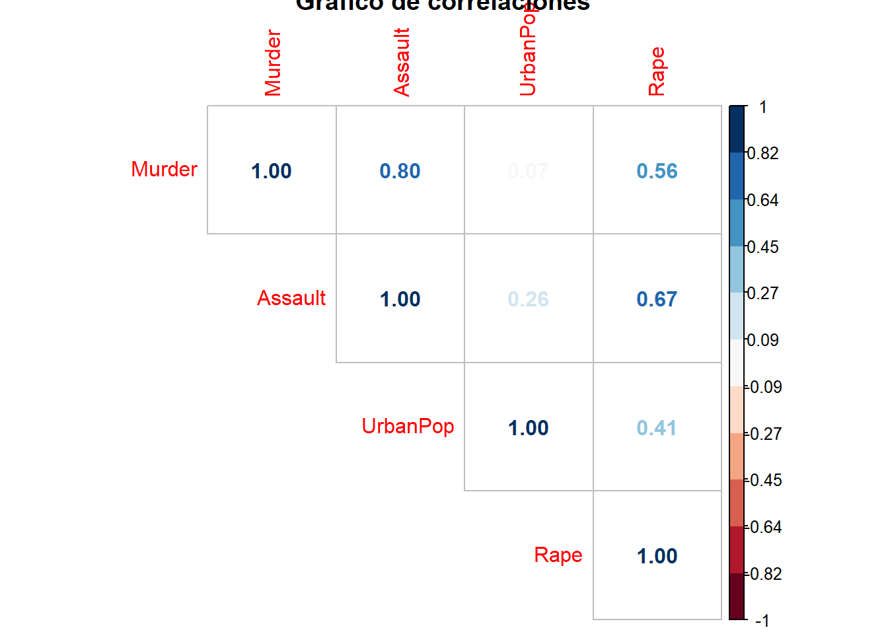
PCA
ACP, por sus siglas en español.
Reduce dimensiones preservando las que tengan mayor varianza.
Para PCA es importante que todas las variables sean numéricas y que estén estandarizadas.
Entonces, empecemos por estandarizar las variables, la función scale() usa una fórmula conocida:
\[ z = \frac{x-\mu}{\sigma} \]
¿Que hace la estandarización? Hace que todas las variables tengan la misma media (\(\mu = 0\)) y la misma varianza (\(\sigma = 1\)).
USArrests_std <- scale(USArrests)
head(USArrests_std) Murder Assault UrbanPop Rape
Alabama 1.24256408 0.7828393 -0.5209066 -0.003416473
Alaska 0.50786248 1.1068225 -1.2117642 2.484202941
Arizona 0.07163341 1.4788032 0.9989801 1.042878388
Arkansas 0.23234938 0.2308680 -1.0735927 -0.184916602
California 0.27826823 1.2628144 1.7589234 2.067820292
Colorado 0.02571456 0.3988593 0.8608085 1.864967207skimr::skim(USArrests_std)| Name | USArrests_std |
| Number of rows | 50 |
| Number of columns | 4 |
| _______________________ | |
| Column type frequency: | |
| numeric | 4 |
| ________________________ | |
| Group variables | None |
Variable type: numeric
| skim_variable | n_missing | complete_rate | mean | sd | p0 | p25 | p50 | p75 | p100 | hist |
|---|---|---|---|---|---|---|---|---|---|---|
| Murder | 0 | 1 | 0 | 1 | -1.60 | -0.85 | -0.12 | 0.79 | 2.21 | ▇▇▅▅▃ |
| Assault | 0 | 1 | 0 | 1 | -1.51 | -0.74 | -0.14 | 0.94 | 1.99 | ▆▇▃▅▃ |
| UrbanPop | 0 | 1 | 0 | 1 | -2.32 | -0.76 | 0.03 | 0.84 | 1.76 | ▁▆▇▅▆ |
| Rape | 0 | 1 | 0 | 1 | -1.49 | -0.66 | -0.12 | 0.53 | 2.64 | ▆▇▅▂▂ |
Creemos los componentes principales y observemos que se crean dos variables principales, pero ¿qué son? ¿qué significan?
acp <- FactoMineR::PCA(USArrests_std, graph = FALSE, scale.unit = FALSE)
factoextra::fviz_pca_var(acp, repel = TRUE) +
theme_bw(base_size = 20)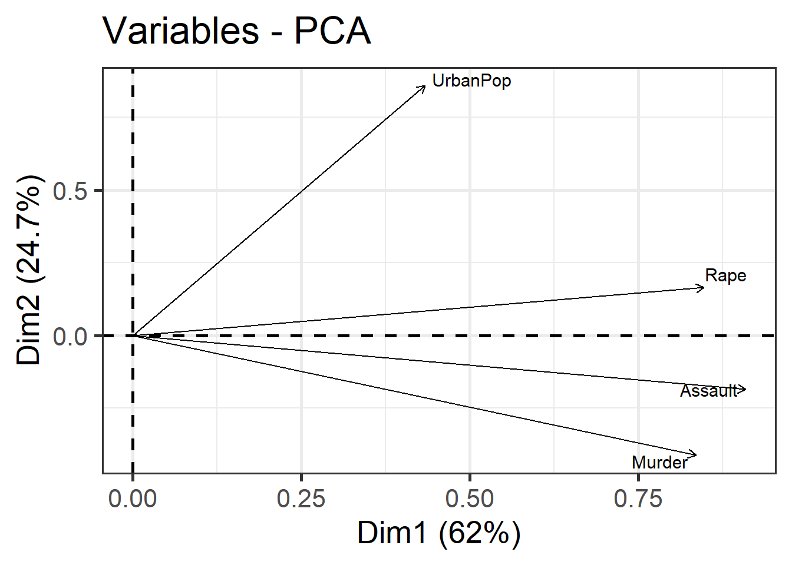
Básicamente que la primera dimensión explica el 62 % y la segunda 24.7 %. En total que con dos dimensiones se explica el 86.7 % de la varianza.
¿Cuáles son esas dimensiones?
Veamos el summary, en acompañamiento con el gráfico anterior. En la dimensión 1 las variables más representadas son: Murder, Assault y Rape. En la dimensión 2: UrbanPop.
summary(acp)
Call:
FactoMineR::PCA(X = USArrests_std, scale.unit = FALSE, graph = FALSE)
Eigenvalues
Dim.1 Dim.2 Dim.3 Dim.4
Variance 2.431 0.970 0.349 0.170
% of var. 62.006 24.744 8.914 4.336
Cumulative % of var. 62.006 86.750 95.664 100.000
Individuals (the 10 first)
Dist Dim.1 ctr cos2 Dim.2 ctr cos2 Dim.3
Alabama | 1.558 | 0.976 0.783 0.392 | -1.122 2.596 0.518 | 0.440
Alaska | 3.020 | 1.931 3.067 0.409 | -1.062 2.327 0.124 | -2.020
Arizona | 2.068 | 1.745 2.507 0.712 | 0.738 1.124 0.127 | -0.054
Arkansas | 1.138 | -0.140 0.016 0.015 | -1.109 2.534 0.950 | -0.113
California | 3.007 | 2.499 5.137 0.690 | 1.527 4.811 0.258 | -0.593
Colorado | 2.093 | 1.499 1.850 0.513 | 0.978 1.971 0.218 | -1.084
Connecticut | 1.841 | -1.345 1.489 0.534 | 1.078 2.396 0.343 | 0.637
Delaware | 1.172 | 0.047 0.002 0.002 | 0.322 0.214 0.075 | 0.711
Florida | 3.039 | 2.983 7.321 0.964 | -0.039 0.003 0.000 | 0.571
Georgia | 2.343 | 1.623 2.167 0.480 | -1.266 3.305 0.292 | 0.339
ctr cos2
Alabama 1.107 0.080 |
Alaska 23.343 0.447 |
Arizona 0.017 0.001 |
Arkansas 0.074 0.010 |
California 2.010 0.039 |
Colorado 6.726 0.268 |
Connecticut 2.321 0.120 |
Delaware 2.897 0.368 |
Florida 1.866 0.035 |
Georgia 0.658 0.021 |
Variables
Dim.1 ctr cos2 Dim.2 ctr cos2 Dim.3 ctr
Murder | 0.835 28.719 0.712 | -0.412 17.488 0.173 | 0.202 11.644
Assault | 0.909 34.010 0.844 | -0.185 3.534 0.035 | 0.159 7.190
UrbanPop | 0.434 7.739 0.192 | 0.860 76.179 0.754 | 0.223 14.290
Rape | 0.847 29.532 0.732 | 0.165 2.800 0.028 | -0.483 66.876
cos2
Murder 0.042 |
Assault 0.026 |
UrbanPop 0.051 |
Rape 0.238 |acp$ind$contrib Dim.1 Dim.2 Dim.3 Dim.4
Alabama 0.783262502 2.595723e+00 1.107096e+00 2.816054e-01
Alaska 3.066666793 2.327394e+00 2.334292e+01 2.218248e+00
Arizona 2.506808767 1.124411e+00 1.683258e-02 8.033733e+00
Arkansas 0.016127218 2.533823e+00 7.363144e-02 3.853982e-01
California 5.136979988 4.810526e+00 2.009575e+00 1.348804e+00
Colorado 1.849739702 1.970700e+00 6.725542e+00 2.474650e-05
Connecticut 1.488502520 2.396051e+00 2.320937e+00 1.618520e-01
Delaware 0.001835449 2.139062e-01 2.896728e+00 8.970584e+00
Florida 7.320596347 3.109579e-03 1.866330e+00 1.069106e-01
Georgia 2.166925123 3.305216e+00 6.578296e-01 1.337128e+01
Hawaii 0.671662852 4.983697e+00 1.446476e-02 9.399294e+00
Idaho 2.168291652 8.993966e-02 3.785962e-01 2.872684e+00
Illinois 1.533233538 9.394297e-01 2.574581e+00 1.717026e-01
Indiana 0.206021212 4.641748e-02 2.917239e-01 2.079696e+00
Iowa 4.095504769 2.187842e-02 1.519025e-01 3.554287e-03
Kansas 0.512062637 1.474874e-01 3.662585e-03 4.917345e-01
Kentucky 0.454624545 1.856214e+00 4.514341e-03 5.185332e+00
Louisiana 1.974529675 1.533164e+00 3.443101e+00 2.384564e+00
Maine 4.632445197 2.862712e-01 2.419866e-02 1.259340e+00
Maryland 2.507394140 3.695603e-01 1.386997e-01 3.604435e+00
Massachusetts 0.190592450 4.393244e+00 2.083710e+00 3.719745e-01
Michigan 3.584750873 4.879576e-02 8.308420e-01 1.208560e-01
Minnesota 2.310397301 8.077760e-01 1.314244e-01 5.225810e-02
Mississippi 0.800729425 1.157903e+01 3.078260e+00 5.355899e-01
Missouri 0.391504268 1.401459e-01 7.990945e-01 5.880950e-01
Montana 1.133193019 5.824293e-01 3.418992e-01 1.765800e-01
Nebraska 1.291677285 7.601409e-02 1.729073e-01 2.912803e-03
Nevada 6.662370337 1.215552e+00 7.591665e+00 1.140748e+00
New Hampshire 4.582660597 6.607006e-04 7.618958e-03 1.266312e-02
New Jersey 0.026583098 4.245587e+00 3.277900e+00 6.831011e-01
New Mexico 3.161380812 4.123357e-02 1.892670e-01 1.329447e+00
New York 2.282895869 1.369279e+00 2.319620e+00 2.096847e-03
North Carolina 1.017626270 1.003066e+01 4.183024e+00 1.050388e+01
North Dakota 7.219791980 7.253102e-01 5.091272e-01 7.439258e-01
Ohio 0.041173709 1.113229e+00 5.438839e-03 2.590050e+00
Oklahoma 0.078386355 1.674337e-01 1.314716e-03 1.231123e-03
Oregon 0.002818613 5.923150e-01 4.954443e+00 6.520167e-01
Pennsylvania 0.636456290 6.590566e-01 9.002801e-01 1.486765e+00
Rhode Island 0.601636699 4.498036e+00 1.052689e+01 4.341432e+00
South Carolina 1.406565700 7.553415e+00 5.066309e-01 1.993136e-01
South Dakota 3.186180602 1.369808e+00 8.500558e-01 1.384532e-01
Tennessee 0.805956520 1.495369e+00 1.984232e-01 4.915315e+00
Texas 1.480823138 3.437996e-01 1.358142e+00 4.770804e+00
Utah 0.244429503 4.375434e+00 4.839320e-01 7.813641e-02
Vermont 6.328341403 3.973492e+00 3.969695e+00 2.420928e-01
Virginia 0.007483477 8.061344e-02 7.694773e-04 5.152234e-01
Washington 0.037937495 1.901746e+00 2.190151e+00 5.624600e-01
West Virginia 3.585241421 4.102363e+00 6.157524e-02 2.006565e-01
Wisconsin 3.487733663 7.550262e-01 1.081631e-01 3.908686e-01
Wyoming 0.319467207 2.082299e-01 3.248617e-01 3.202769e-01Por ello la dimensión 1 podría llamarse: Crimen, y la dimensión dos: población.
factoextra::fviz_pca_var(acp, repel = TRUE) + # var: variables
labs(title = "Análisis de componentes principales: variables",
x = "Inseguridad ciudadana (62.0 %)",
y = "Población (24.7 %)") +
theme_bw()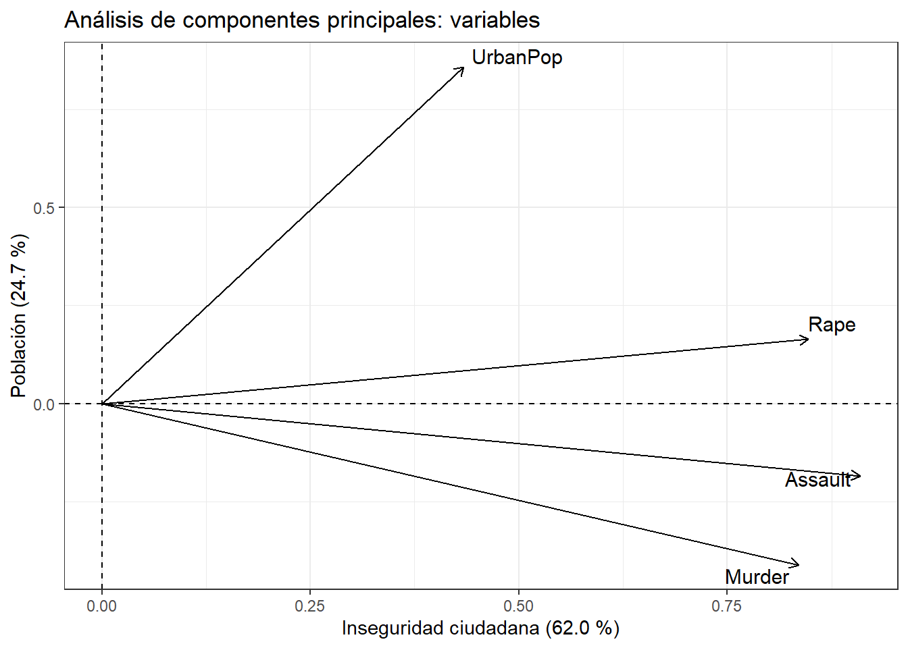
Ahora, ¿como se organizan las variables observadas, o sea, los estados
factoextra::fviz_pca_ind(acp, axes = c(1, 2), repel = TRUE) + # ind: individuos
labs(title = "Análisis de componentes principales: individuos",
x = "Crimen (62.0 %)",
y = "Población (24.7 %)") +
theme_bw()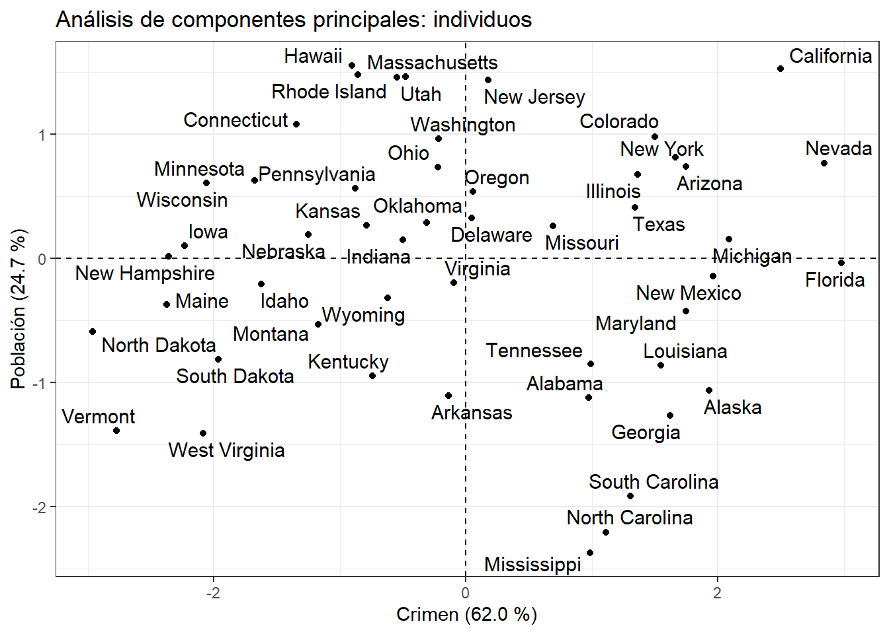
¡Interpretemos en conjunto!
Supongamos que necesitamos una escala adicional:
¿Quienes son las dimensiones 3 y 4?
factoextra::fviz_pca_ind(acp, axes = c(2, 3), repel = TRUE) + # ind: individuos
labs(title = "Análisis de componentes principales: individuos") +
theme_bw()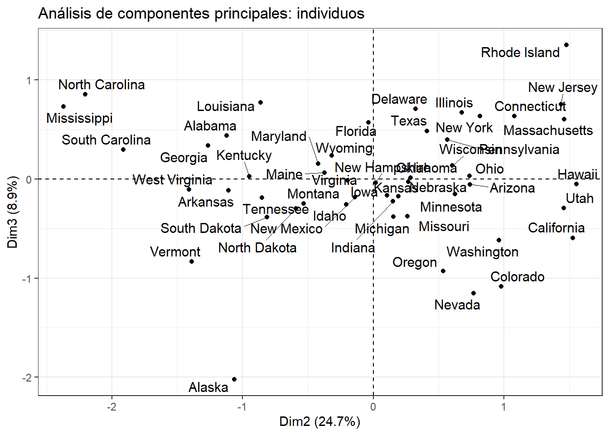
factoextra::fviz_pca_ind(acp, axes = c(3, 4), repel = TRUE) + # ind: individuos
labs(title = "Análisis de componentes principales: individuos") +
theme_bw()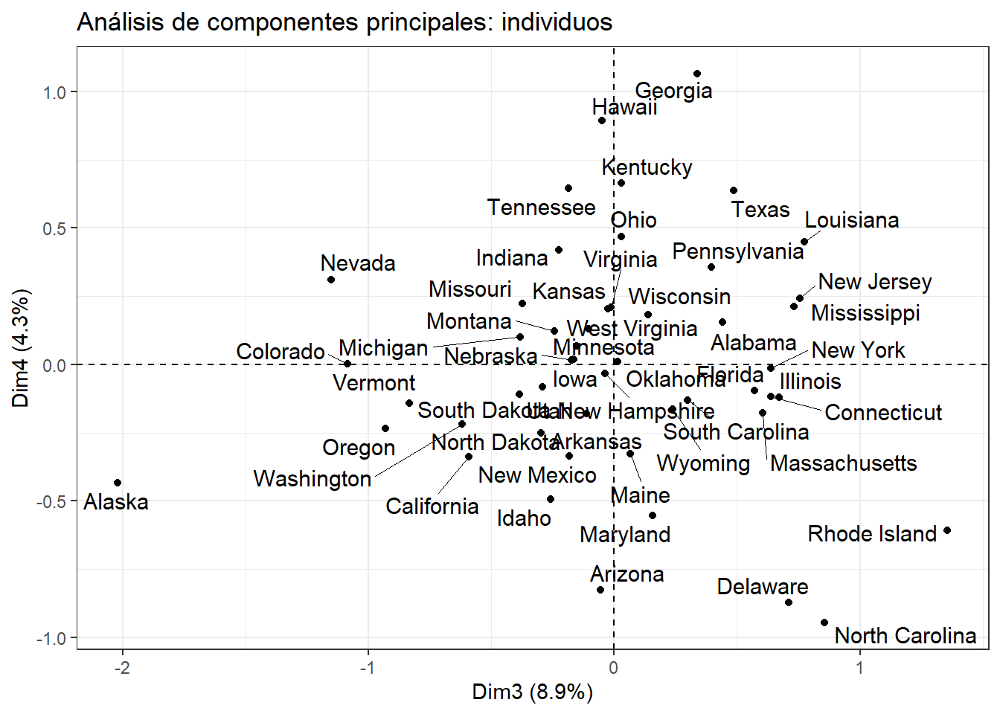
Clustering
Conocido también como conglomerados.
Es una técnica multivariable para detectar agrupamientos en un conjunto de datos. Puede ser agrupamiento de casos o variables. Se usa cuando se desconocen el número de grupos o conglomerados que existen, o las variables que pertenecen a ellos.
Más concretamente el objetivo del clustering es agrupar casos de manera que:
Los pertenecientes a un mismo grupo sean muy parecidos entre sí, es decir que el grupo esté cohesionado internamente.
Los pertenecientes a grupos diferentes tengan un comportamiento distinto con respecto a las variables analizadas, es decir, que cada grupo esté aislado externamente de los demás grupos.
En resumen:
- Que la varianza dentro del grupo sea mínima
- Que la varianza entre grupos sea máxima.
Existen varios tipos de conglomerados, veamos dos:
k-medias
Cluster jerárquico
k - medias
Agrupa casos
Trabaja solamente con variables numéricas
Se usa generalmente con archivos de datos grandes
Se le debe especificar el número de conglomerados deseado
Algoritmo
Empieza usando los valores de los primeros k casos del archivo como estimaciones de los k medias de los conglomerados, donde k es el número de conglomerados especificado por el usuario.
Los centroides de los conglomerados iniciales se construyen asignando cada caso al conglomerado con el centroide más cercano y entonces actualiza el centroide.
Un proceso iterativo encuentra los centroides finales.
A cada paso, los casos son agrupados en el conglomerado con el centroide más cercano y los centroides de los conglomerados son recalculados.
El proceso continua hasta que no ocurran cambios en los centroides o hasta que un número máximo de iteraciones se haya alcanzado.
El usuario puede especificar los centroides de los conglomerados y el algoritmo le asigna los casos a estos centroides.
Este procedimiento es útil cuando el usuario posee un número grande de casos y cuenta con variables cuantitativas.
Estabilidad de la solución final.
https://x.com/akshay_pachaar/status/1845441930286727334
Aplicación del algoritmo
Ahora tenemos que seleccionar la cantidad óptima de clusters. Con base en este gráfico k puede ser 3 o 4.
¿Por qué?
factoextra::fviz_nbclust(USArrests_std, kmeans, method = "wss",
k.max = 10, nboot = 500,
linecolor = "darkred") +
labs(title = "Método del codo",
x = "Número de clusters k",
y = "Varianza intra grupos") +
theme_bw()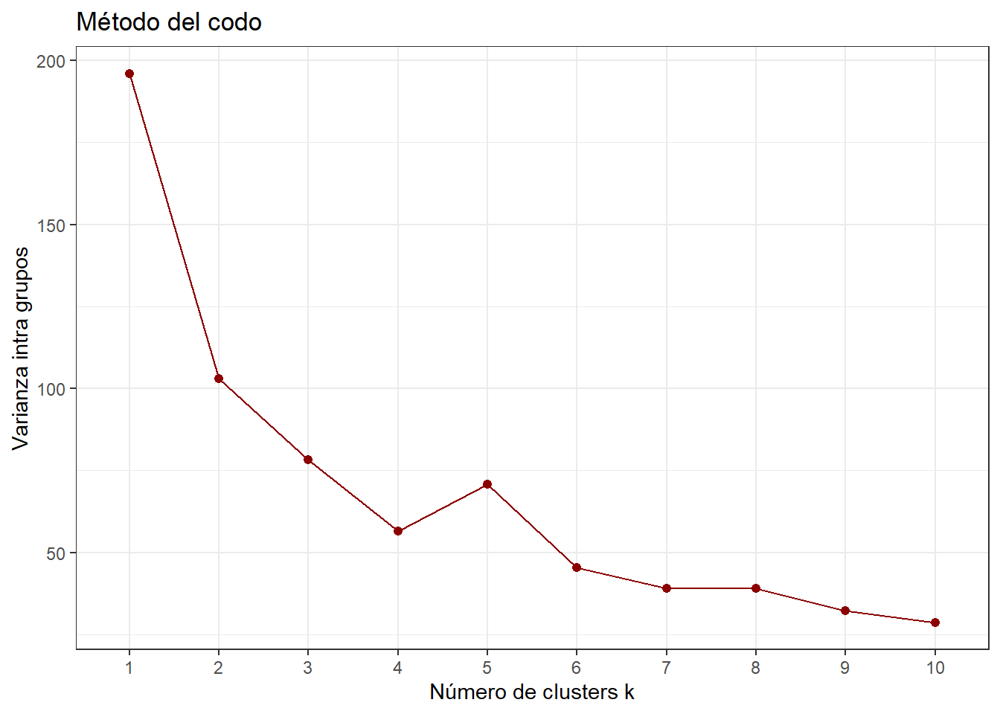
Finalmente, hagamos el algoritmo, con \(k=4\)
kmedias <- kmeans(USArrests_std, centers = 4)
datos_final <- data.frame(USArrests, clusters = kmedias$cluster)
datos_final %>%
dplyr::group_by(clusters) %>%
dplyr::summarise_all(mean)# A tibble: 4 × 5
clusters Murder Assault UrbanPop Rape
<int> <dbl> <dbl> <dbl> <dbl>
1 1 5.66 139. 73.9 18.8
2 2 2.43 73.5 57 11.5
3 3 6.03 104. 45.2 14.2
4 4 12.2 255. 68.4 29.2A partir de aquí se pueden representar los resultados por medio de gráficos.
datos_final %>%
dplyr::group_by(clusters) %>%
dplyr::summarise_all(mean) %>%
ggplot2::ggplot(aes(clusters, Rape)) +
geom_col(fill = "darkred", alpha = 0.7) +
labs(title = "Promedio de asesinatos por cluster",
x = "Cluster",
y = "Asesinatos por cada 100.00 habitantes") +
theme_bw()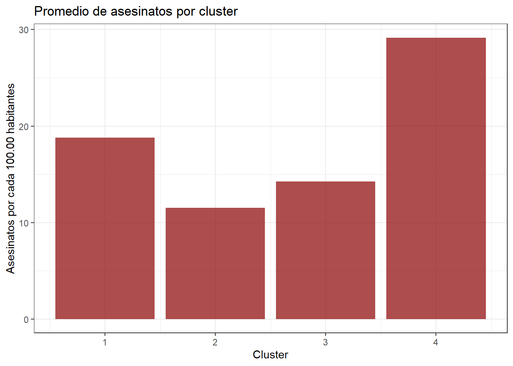
Cluster jerárquico
Ahora supongamos que no se conoce el valor de k, y se quieren probar varias opciones
hc <- hclust(dist(USArrests_std), method = "complete")
ggdendro::ggdendrogram(hc, rotate = FALSE, theme_dendro = TRUE) +
geom_hline(yintercept = 4, linetype = 2)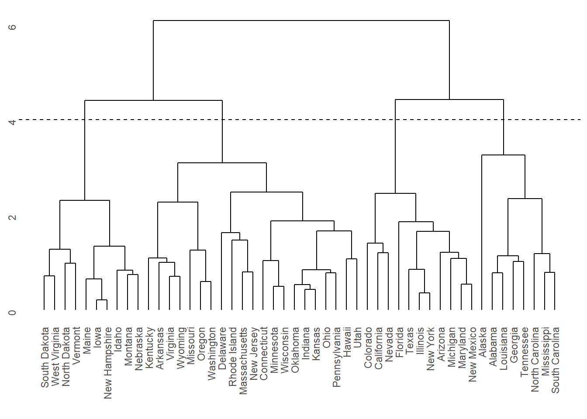
ggdendro::ggdendrogram(hc, rotate = TRUE, theme_dendro = TRUE)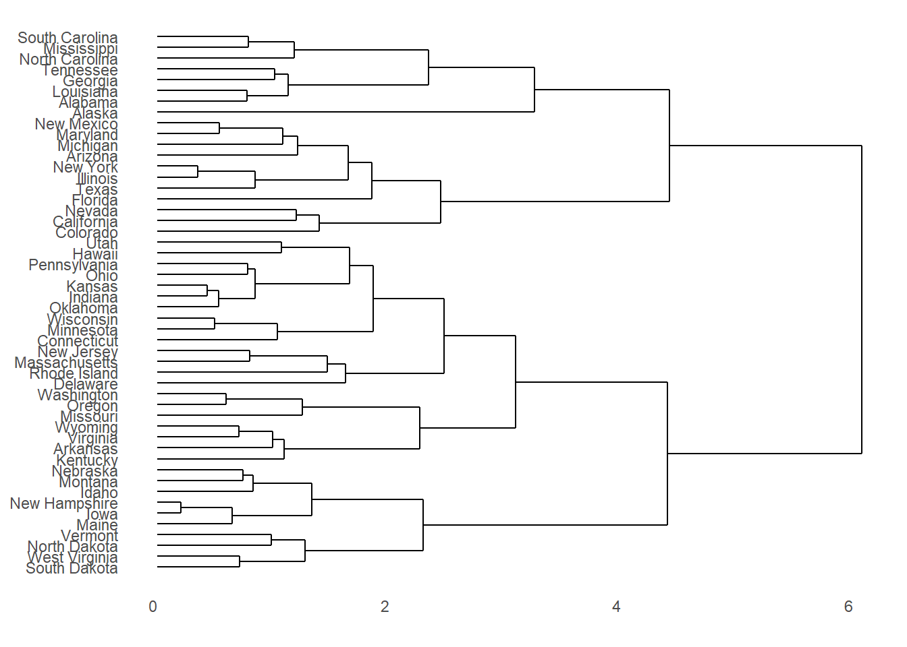
Supongamos que nos interesan 4 grupos
clusters <- cutree(hc, k = 4)
datos_finales_hc <- data.frame(USArrests, clusters)El resto es similar, hacer agrupaciones, analizar estadísticas descriptivas, etc.
DBSCAN
Es el acrónimo de Density-based spatial clustering of applications with noise
Es un método de clusterización adecuado para buscar patrones de agrupación en el espacio físico, este método es más adecuado para los datos en los que los métodos jerárquicos no funcionan del todo bien debido al ruido y los valores atípicos.
Este algorítmo agrupa los puntos que están más cercanos respecto a alguna métrica, comúnmente se utiliza la distancia euclidiana, además para este algorítmo se tiene que cada cluster contendrá un mínimo de puntos.
Este método tiene sus ventajas y desventajas respecto otros métodos de clusterización (K-MEANS por ejemplo) y dependiendo del problema que se quiera analizar se debe elegir el método más adecuado, aún así hay varios aspectos que deben ser tomados en cuenta.
DBSCAN no necesita que se especifique el número de clusters
Es más fácil de implementar y de entender
Con este método podemos garantizar que cada cluster tendrá un mínimo número de puntos
También tiene algunas desventajas
DBSCAN es menos rápido que K-MEANS
No funciona bien en clusters de diferentes densidades
Los parámetros deben ser elegidos con mayor cuidado o precisión
dbscan::kNNdistplot(USArrests_std,
k = 5) # >= D + 1, D = Dimensiones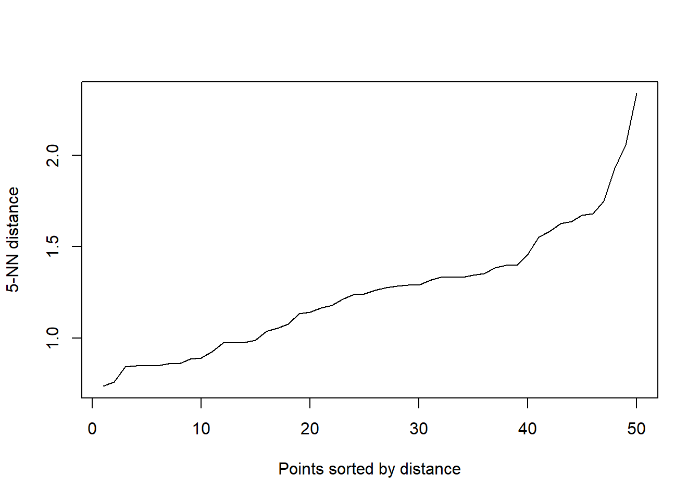
Del gráfico anterior seleccionamos eps.
cluster <- dbscan::dbscan(USArrests_std,
eps = 0.5,
minPts = 4)
arrestos <- cbind(USArrests, cluster$cluster)
head(arrestos) Murder Assault UrbanPop Rape cluster$cluster
Alabama 13.2 236 58 21.2 0
Alaska 10.0 263 48 44.5 0
Arizona 8.1 294 80 31.0 0
Arkansas 8.8 190 50 19.5 0
California 9.0 276 91 40.6 0
Colorado 7.9 204 78 38.7 0Ahora realizamos el gráfico
dbscan::hullplot(arrestos,cluster$cluster,
main = "")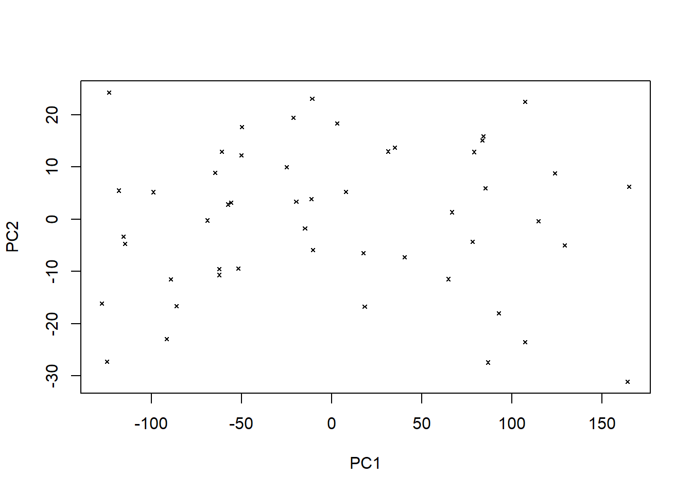